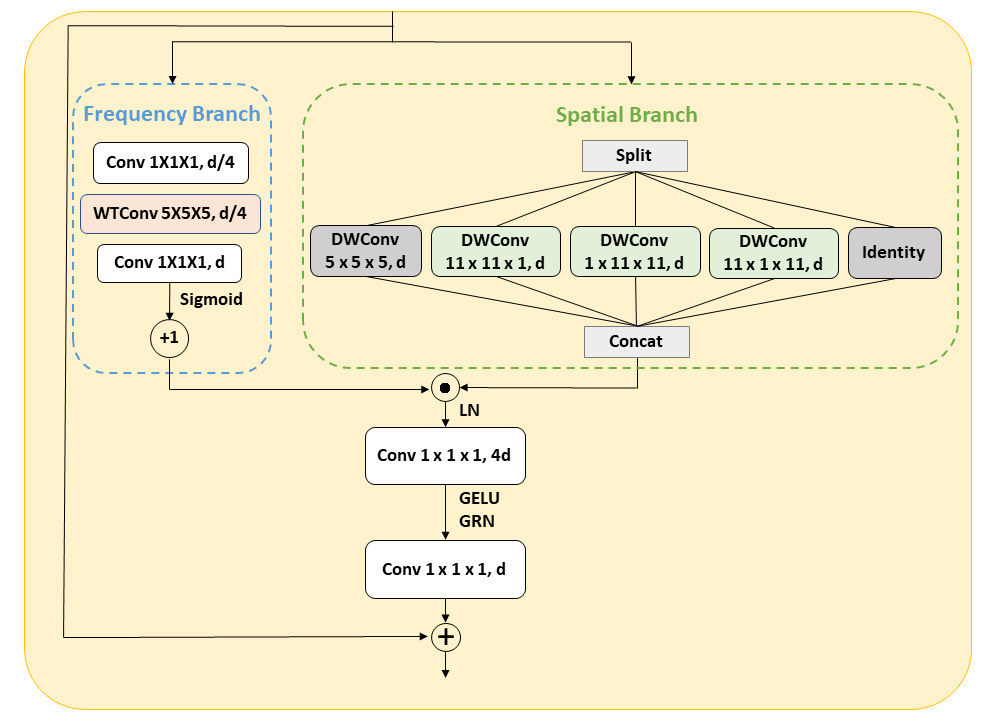
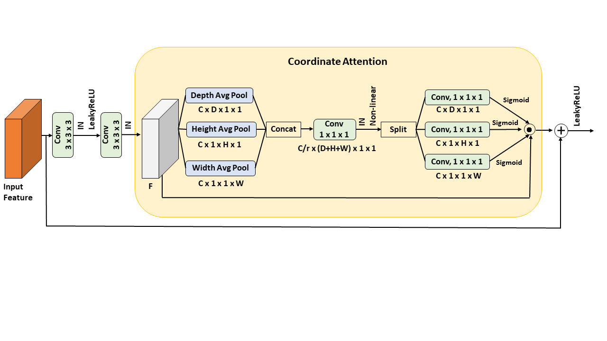

Due to complex cardiac anatomy and low image contrast, accurate segmentation of the myocardium and aortic valve in computed tomography (CT) images remains a major challenge. Current mainstream U-Net-based structures often lose high-frequency boundary information during continuous downsampling. To address this issue, this study proposes a new model WIC-Net, a novel dual-stream architecture that effectively preserves fine anatomical details. Regarding the model design, the encoder employs the InceptionWT block, which combines two branches: the spatial branch utilizes InceptionNeXt with large-kernel convolutions to capture global features, while the frequency branch adopts Wavelet Convolutions (WTConv). WTConv decomposes features via Discrete Wavelet Transform (DWT) and generates a frequency-aware attention map to further enhance the spatial features. The decoder integrates the Residual Coordinate Attention (ResCA) block to progressively refine feature representations and accurately guide spatial reconstruction. This strategy not only effectively recovers micro-structures but also ensures precise boundary delineation. This study evaluated the proposed model using five-fold cross-validation on both the M-WHS 2025 and MM-WHS datasets. Experimental results show that WIC-Net achieves superior performance compared to existing state-of-the-art models across several key metrics, demonstrating remarkable advantages particularly in the segmentation of small structures. This fully proves its highly accurate segmentation capabilities for clinical applications.


@article{Martin2024CVDs,
author = {Seth S. Martin and Aaron W. Aday and Zaid I. Almarzooq and Cheryl A.M. Anderson and Pankaj Arora and Christy L. Avery and Carissa M. Baker-Smith and Bethany Barone Gibbs and Andrea Z. Beaton and Amelia K. Boehme and Yvonne Commodore-Mensah and Maria E. Currie and Mitchell S.V. Elkind and Kelly R. Evenson and Giuliano Generoso and Debra G. Heard and Swapnil Hiremath and Michelle C. Johansen and Rizwan Kalani and Dhruv S. Kazi and Darae Ko and Junxiu Liu and Jared W. Magnani and Erin D. Michos and Michael E. Mussolino and Sankar D. Navaneethan and Nisha I. Parikh and Sarah M. Perman and Remy Poudel and Mary Rezk-Hanna and Gregory A. Roth and Nilay S. Shah and Marie-Pierre St-Onge and Evan L. Thacker and Connie W. Tsao and Sarah M. Urbut and Harriette G.C. Van Spall and Jenifer H. Voeks and Nae-Yuh Wang and Nathan D. Wong and Sally S. Wong and Kristine Yaffe and Latha P. Palaniappan and on behalf of the American Heart Association Council on Epidemiology and Prevention Statistics Committee and Stroke Statistics Subcommittee},
title = {2024 Heart Disease and Stroke Statistics: A Report of US and Global Data From the American Heart Association},
journal = {Circulation},
volume = {149},
number = {8},
pages = {e347-e913},
year = {2024},
doi = {10.1161/CIR.0000000000001209},
URL = {https://www.ahajournals.org/doi/abs/10.1161/CIR.0000000000001209},
eprint = {https://www.ahajournals.org/doi/pdf/10.1161/CIR.0000000000001209}
}
@article{Lehmkuhl2013TAVI,
title={Role of Preprocedural Computed Tomography in Transcatheter Aortic Valve Implantation},
author={Lukas Lehmkuhl and Borek Foldyna and Martin Haensig and Konstantin von Aspern and Christian L{\"u}cke and Claudia Andres and Matthias Grothoff and Franziska Riese and Stefan Nitzsche and David Michael Holzhey and Axel Linke and Friedrich W. Mohr and Matthias Gutberlet},
journal={Fortschritte auf dem Gebiet der R{\"o}ntgenstrahlen und der bildgebenden Verfahren},
year={2013},
volume={185},
pages={941 - 949},
url={https://api.semanticscholar.org/CorpusID:42609530}
}
@article{PARK2022CardiacSeg,
title = {Cardiac segmentation on CT Images through shape-aware contour attentions},
journal = {Computers in Biology and Medicine},
volume = {147},
pages = {105782},
year = {2022},
issn = {0010-4825},
author = {Sanguk Park and Minyoung Chung}
}
@Article{Aoyama2022AutomaticAorticValveCusps,
AUTHOR = {Aoyama, Gakuto and Zhao, Longfei and Zhao, Shun and Xue, Xiao and Zhong, Yunxin and Yamauchi, Haruo and Tsukihara, Hiroyuki and Maeda, Eriko and Ino, Kenji and Tomii, Naoki and Takagi, Shu and Sakuma, Ichiro and Ono, Minoru and Sakaguchi, Takuya},
TITLE = {Automatic Aortic Valve Cusps Segmentation from CT Images Based on the Cascading Multiple Deep Neural Networks},
JOURNAL = {Journal of Imaging},
VOLUME = {8},
YEAR = {2022},
NUMBER = {1},
ARTICLE-NUMBER = {11},
ISSN = {2313-433X}
}
@inproceedings{Fan2019Attention-Guided,
author = {Fan, Bowen and Tomii, Naoki and Tsukihara, Hiroyuki and Maeda, Eriko and Yamauchi, Haruo and Nawata, Kan and Hatano, Asuka and Takagi, Shu and Sakuma, Ichiro and Ono, Minoru},
title = {Attention-Guided Decoder in Dilated Residual Network for Accurate Aortic Valve Segmentation in 3D CT Scans},
year = {2019},
publisher = {Springer},
booktitle = {International Conference on Medical Image Computing and Computer-Assisted Intervention (MICCAI)},
pages = {121--129}
}
@article{Ronneberger2015U-Net,
author = {Ronneberger, Olaf and Fischer, Philipp and Brox, Thomas},
journal = {CoRR},
title = {U-Net: Convolutional Networks for Biomedical Image Segmentation},
volume = {abs/1505.04597},
year = 2015
}
@inproceedings{20163DU-Net,
author = {Çiçek, Özgün and Abdulkadir, Ahmed and Lienkamp, Soeren S. and Brox, Thomas and Ronneberger, Olaf},
booktitle = {International Conference on Medical Image Computing and Computer-Assisted Intervention (MICCAI)},
pages = {424-432},
publisher = {Springer},
title = {3D U-Net: Learning Dense Volumetric Segmentation from Sparse Annotation},
year = 2016
}
@inproceedings{Zhou2018UNet++,
author = {Zhou, Zongwei and Siddiquee, Md Mahfuzur Rahman and Tajbakhsh, Nima and Liang, Jianming},
booktitle = {Deep Learning in Medical Image Analysis and Multimodal Learning for Clinical Decision Support (DLMIA)},
pages = {3-11},
publisher = {Springer},
title = {UNet++: A Nested U-Net Architecture for Medical Image Segmentation},
year = 2018
}
@inproceedings{oktay2018attention,
author = {Oktay, Ozan and Schlemper, Jo and Folgoc, Loic Le and Lee, Matthew and Heinrich, Mattias and Misawa, Kazunari and Mori, Kensaku and McDonagh, Steven and Hammerla, Nils Y and Kainz, Bernhard},
booktitle = {Medical Imaging with Deep Learning (MIDL)},
title = {Attention u-net: Learning where to look for the pancreas},
year = 2018
}
@inproceedings{isensee2018nnunet,
author = {Isensee, Fabian and Petersen, Jens and Klein, Andre and Zimmerer, David and Jaeger, Paul F. and Kohl, Simon and Wasserthal, Jakob and Köhler, Gregor and Norajitra, Tobias and Wirkert, Sebastian and Maier-Hein, Klaus H.},
booktitle = {International Conference on Medical Image Computing and Computer-Assisted Intervention (MICCAI)},
title = {nnU-Net: Self-adapting Framework for U-Net-Based Medical Image Segmentation},
year = 2018
}
@misc{chen2021transunet,
title={TransUNet: Transformers Make Strong Encoders for Medical Image Segmentation},
author={Jieneng Chen and Yongyi Lu and Qihang Yu and Xiangde Luo and Ehsan Adeli and Yan Wang and Le Lu and Alan L. Yuille and Yuyin Zhou},
year={2021},
eprint={2102.04306},
archivePrefix={arXiv},
primaryClass={cs.CV}
}
@misc{Alexey2021ViT,
title={An Image is Worth 16x16 Words: Transformers for Image Recognition at Scale},
author={Alexey Dosovitskiy and Lucas Beyer and Alexander Kolesnikov and Dirk Weissenborn and Xiaohua Zhai and Thomas Unterthiner and Mostafa Dehghani and Matthias Minderer and Georg Heigold and Sylvain Gelly and Jakob Uszkoreit and Neil Houlsby},
year={2021},
eprint={2010.11929},
archivePrefix={arXiv},
primaryClass={cs.CV},
url={https://arxiv.org/abs/2010.11929},
}
@inproceedings{Hatamizadeh2021UNETR,
title={UNETR: Transformers for 3D Medical Image Segmentation},
author={Ali Hatamizadeh and Dong Yang and Holger R. Roth and Daguang Xu},
booktitle={IEEE/CVF Winter Conference on Applications of Computer Vision (WACV)},
year={2022},
pages={1748-1758}
}
@misc{liu2021swintrans,
title={Swin Transformer: Hierarchical Vision Transformer using Shifted Windows},
author={Ze Liu and Yutong Lin and Yue Cao and Han Hu and Yixuan Wei and Zheng Zhang and Stephen Lin and Baining Guo},
year={2021},
eprint={2103.14030},
archivePrefix={arXiv},
primaryClass={cs.CV},
url={https://arxiv.org/abs/2103.14030},
}
@inproceedings{Tang2021SwinUNETR,
title={Self-Supervised Pre-Training of Swin Transformers for 3D Medical Image Analysis},
author={Yucheng Tang and Dong Yang and Wenqi Li and Holger R. Roth and Bennett A. Landman and Daguang Xu and V. Nath and Ali Hatamizadeh},
booktitle={IEEE/CVF Conference on Computer Vision and Pattern Recognition (CVPR)},
year={2022},
pages={20698-20708}
}
@misc{ma2024umamba,
title={U-Mamba: Enhancing Long-range Dependency for Biomedical Image Segmentation},
author={Jun Ma and Feifei Li and Bo Wang},
year={2024},
eprint={2401.04722},
archivePrefix={arXiv},
primaryClass={eess.IV},
url={https://arxiv.org/abs/2401.04722},
}
@misc{wang2024mambaunet,
title={Mamba-UNet: UNet-Like Pure Visual Mamba for Medical Image Segmentation},
author={Ziyang Wang and Jian-Qing Zheng and Yichi Zhang and Ge Cui and Lei Li},
year={2024},
eprint={2402.05079},
archivePrefix={arXiv},
primaryClass={eess.IV},
url={https://arxiv.org/abs/2402.05079},
}
@inproceedings{Liu2024Swin-UMamba,
author = {Liu, Jiarun and Yang, Hao and Zhou, Hong-Yu and Xi, Yan and Yu, Lequan and Li, Cheng and Liang, Yong and Shi, Guangming and Yu, Yizhou and Zhang, Shaoting and Zheng, Hairong and Wang, Shanshan},
title = {Swin-UMamba: Mamba-Based UNet with ImageNet-Based Pretraining},
year = {2024},
isbn = {978-3-031-72113-7},
publisher = {Springer-Verlag},
address = {Berlin, Heidelberg},
url = {https://doi.org/10.1007/978-3-031-72114-4_59},
doi = {10.1007/978-3-031-72114-4_59},
booktitle = {Medical Image Computing and Computer Assisted Intervention – MICCAI 2024: 27th International Conference, Marrakesh, Morocco, October 6–10, 2024, Proceedings, Part IX},
pages = {615–625},
numpages = {11}
}
@inproceedings{Woo2023ConvNeXtV2,
title={ConvNeXt V2: Co-designing and Scaling ConvNets with Masked Autoencoders},
author={Sanghyun Woo and Shoubhik Debnath and Ronghang Hu and Xinlei Chen and Zhuang Liu and In-So Kweon and Saining Xie},
booktitle={IEEE/CVF Conference on Computer Vision and Pattern Recognition (CVPR)},
year={2023},
pages={16133-16142}
}
@article{HSIEH2025UnetCNX,
title ={An Exploratory Study in Myocardium Computed Tomography Image Segmentation Using UNetCNX: U-Net with ConvNeXt Encoding},
author ={Tung-Ju Hsieh and Shih-Chen Hsu and Wei-Hsiu Huang and I-Chen Chen and Jeng Wei},
journal ={Journal of Information Science and Engineering},
volume ={42},
number ={1},
year ={2026},
month ={Jan},
pages ={243-259},
ISSN ={1016-2364}
}
@misc{hou2021CA,
title={Coordinate Attention for Efficient Mobile Network Design},
author={Qibin Hou and Daquan Zhou and Jiashi Feng},
year={2021},
eprint={2103.02907},
archivePrefix={arXiv},
primaryClass={cs.CV},
}
@article{Woo2018CBAM,
author = {Woo, Sanghyun and Park, Jongchan and Lee, Joon-Young and Kweon, In So},
title = {CBAM: Convolutional Block Attention Module},
booktitle = {European Conference on Computer Vision (ECCV)},
year = {2018},
pages = {3-19}
}
@misc{pydimarry2024h-swish,
title={Evaluating Model Performance with Hard-Swish Activation Function Adjustments},
author={Sai Abhinav Pydimarry and Shekhar Madhav Khairnar and Sofia Garces Palacios and Ganesh Sankaranarayanan and Darian Hoagland and Dmitry Nepomnayshy and Huu Phong Nguyen},
year={2024},
eprint={2410.06879},
archivePrefix={arXiv},
primaryClass={cs.CV},
}
@article{Yu2023InceptionNeXtWI,
title={InceptionNeXt: When Inception Meets ConvNeXt},
author={Weihao Yu and Pan Zhou and Shuicheng Yan and Xinchao Wang},
booktitle={IEEE/CVF Conference on Computer Vision and Pattern Recognition (CVPR)},
year={2024},
pages={5672-5683}
}
@article{Lei2024,
title={多分支卷積心臟肌肉影像分割
Multi-branch Convolution Myocardium Image
Segmentation},
author={雷岱蓉},
journal={National Taipei University of Technology},
year={2024}
}
@inproceedings{Li2022wavesnet,
author = {Li, Qiufu and Shen, Linlin},
title = {WaveSNet: Wavelet Integrated Deep Networks for Image Segmentation},
year = {2022},
isbn = {978-3-031-18915-9},
publisher = {Springer-Verlag},
address = {Berlin, Heidelberg},
url = {https://doi.org/10.1007/978-3-031-18916-6_27},
doi = {10.1007/978-3-031-18916-6_27},
booktitle = {Pattern Recognition and Computer Vision: 5th Chinese Conference, PRCV 2022, Shenzhen, China, November 4–7, 2022, 2022, Proceedings, Part IV},
pages = {325–337},
numpages = {13},
keywords = {Image segmentation, Wavelet transform, Deep network},
location = {Shenzhen, China}
}
@inproceedings{Li2020WaveletU-Net,
author = {Li, Ying and Wang, Yu and Leng, Tuo and Zhijie, Wen},
title = {Wavelet U-Net for Medical Image Segmentation},
year = {2020},
isbn = {978-3-030-61608-3},
publisher = {Springer-Verlag},
url = {https://doi.org/10.1007/978-3-030-61609-0_63},
doi = {10.1007/978-3-030-61609-0_63},
booktitle = {Artificial Neural Networks and Machine Learning – ICANN 2020: 29th International Conference on Artificial Neural Networks, Bratislava, Slovakia, September 15–18, 2020, Proceedings, Part I},
pages = {800–810},
numpages = {11}
}
@misc{finder2024waveletconv,
title={Wavelet Convolutions for Large Receptive Fields},
author={Shahaf E. Finder and Roy Amoyal and Eran Treister and Oren Freifeld},
year={2024},
eprint={2407.05848},
archivePrefix={arXiv},
primaryClass={cs.CV},
url={https://arxiv.org/abs/2407.05848},
}
@inproceedings{AlMd2025WaveFormer,
author = {Al Hasan, Md Mahfuz and Zaman, Mahdi and Jawad, Abdul and Santamaria-Pang, Alberto and Lee, Ho Hin and Tarapov, Ivan and See, Kyle B. and Imran, Md Shah and Roy, Antika and Fallah, Yaser Pourmohammadi and Asadizanjani, Navid and Forghani, Reza},
title = {WaveFormer: A 3D Transformer with Wavelet-Driven Feature Representation for Efficient Medical Image Segmentation},
booktitle = {International Conference on Medical Image Computing and Computer-Assisted Intervention (MICCAI)},
year = {2025},
publisher = {Springer},
pages = {684--694}
}
@ARTICLE{Zhuang2019,
author={Zhuang, Xiahai},
journal={IEEE Transactions on Pattern Analysis and Machine Intelligence},
title={Multivariate Mixture Model for Myocardial Segmentation Combining Multi-Source Images},
year={2019},
volume={41},
number={12},
pages={2933-2946},
keywords={Myocardium;Image segmentation;Mixture models;Biomedical imaging;Pathology;Magnetic resonance;Multivariate image;multi-modality;segmentation;registration;medical image analysis;cardiac MRI},
doi={10.1109/TPAMI.2018.2869576}
}
@InProceedings{Zhang2025UWT-Net,
author = { Zhang, Pengcheng AND Ouyang, Xiaocao AND Peng, Ran},
title = { { UWT-Net: Mining low-frequency feature information for medical image segmentation } },
booktitle = {proceedings of Medical Image Computing and Computer Assisted Intervention -- MICCAI 2025},
year = {2025},
publisher = {Springer Nature Switzerland},
volume = {LNCS 15969},
month = {September},
page = {615 -- 624}
}
@INPROCEEDINGS{Zhong2024WaveU3S,
author={Zhong, Tianzhao and Yang, Huaishui and Li, Jihao and Lyu, Mengye and Liu, Shaojun},
booktitle={2024 IEEE International Symposium on Biomedical Imaging (ISBI)},
title={WaveU3S: A Lightweight Wavelet Dual-Attention Unet for 3D Medical Image Segmentation},
year={2024},
volume={},
number={},
pages={1-5},
doi={10.1109/ISBI56570.2024.10635283}
}
@article{Zeng2024WETUNet,
title={WET-UNet: Wavelet integrated efficient transformer networks for nasopharyngeal carcinoma tumor segmentation},
author={Yan Zeng and Jun Li and Zhe Zhao and Wei Liang and Penghui Zeng and Shaodong Shen and Kun Zhang and Chong Shen},
journal={Science Progress},
year={2024},
volume={107},
url={https://api.semanticscholar.org/CorpusID:268873243}
}
@inproceedings{Lu2025p187WMREN,
title = {Wavelet Multi-scale Region-Enhanced Network for Medical Image Segmentation},
author = {Lu, Hang and Du, Liang and Zhou, Peng},
booktitle = {Proceedings of the Thirty-Fourth International Joint Conference on
Artificial Intelligence, {IJCAI-25}},
publisher = {International Joint Conferences on Artificial Intelligence Organization},
editor = {James Kwok},
pages = {1675--1683},
year = {2025},
month = {8},
note = {Main Track},
doi = {10.24963/ijcai.2025/187},
url = {https://doi.org/10.24963/ijcai.2025/187},
}
@article{ZHUANG2016MMWHS,
title = {Multi-scale patch and multi-modality atlases for whole heart segmentation of MRI},
journal = {Medical Image Analysis},
volume = {31},
pages = {77-87},
year = {2016},
issn = {1361-8415},
doi = {https://doi.org/10.1016/j.media.2016.02.006},
url = {https://www.sciencedirect.com/science/article/pii/S1361841516000219},
author = {Xiahai Zhuang and Juan Shen},
}
@ARTICLE{Bernard2018,
author={Bernard, Olivier and Lalande, Alain and Zotti, Clement and Cervenansky, Frederick and Yang, Xin and Heng, Pheng-Ann and Cetin, Irem and Lekadir, Karim and Camara, Oscar and Gonzalez Ballester, Miguel Angel and Sanroma, Gerard and Napel, Sandy and Petersen, Steffen and Tziritas, Georgios and Grinias, Elias and Khened, Mahendra and Kollerathu, Varghese Alex and Krishnamurthi, Ganapathy and Rohé, Marc-Michel and Pennec, Xavier and Sermesant, Maxime and Isensee, Fabian and Jäger, Paul and Maier-Hein, Klaus H. and Full, Peter M. and Wolf, Ivo and Engelhardt, Sandy and Baumgartner, Christian F. and Koch, Lisa M. and Wolterink, Jelmer M. and Išgum, Ivana and Jang, Yeonggul and Hong, Yoonmi and Patravali, Jay and Jain, Shubham and Humbert, Olivier and Jodoin, Pierre-Marc},
journal={IEEE Transactions on Medical Imaging},
title={Deep Learning Techniques for Automatic MRI Cardiac Multi-Structures Segmentation and Diagnosis: Is the Problem Solved?},
year={2018},
volume={37},
number={11},
pages={2514-2525},
keywords={Machine learning;Magnetic resonance imaging;Myocardium;Image segmentation;Task analysis;Biomedical imaging;Heart;Cardiac segmentation and diagnosis;deep learning;MRI;left and right ventricles;myocardium},
doi={10.1109/TMI.2018.2837502}
}
@misc{xie2021cotr,
title={CoTr: Efficiently Bridging CNN and Transformer for 3D Medical Image Segmentation},
author={Yutong Xie and Jianpeng Zhang and Chunhua Shen and Yong Xia},
year={2021},
eprint={2103.03024},
archivePrefix={arXiv},
primaryClass={cs.CV}
}
@article{Habijan2019WholeHS,
title={Whole Heart Segmentation from CT images Using 3D U-Net architecture},
author={Marija Habijan and Hrvoje Leventi{\'c} and Irena Gali{\'c} and Danilo Babin},
journal={2019 International Conference on Systems, Signals and Image Processing (IWSSIP)},
year={2019},
pages={121-126},
url={https://api.semanticscholar.org/CorpusID:199490001}
}
@inproceedings{Dormer2018HeartCS,
title={Heart chamber segmentation from CT using convolutional neural networks},
author={James D. Dormer and Ling Ma and Martin T. Halicek and Carolyn M. Reilly and Eduard Schreibmann and Baowei Fei},
booktitle={Medical Imaging},
year={2018},
url={https://api.semanticscholar.org/CorpusID:52178081}
}
@ARTICLE{Alnasser2024AdvancementsCardiac,
AUTHOR={Alnasser, Turki Nasser and Abdulaal, Lojain and Maiter, Ahmed and Sharkey, Michael and Dwivedi, Krit and Salehi, Mahan and Garg, Pankaj and Swift, Andrew James and Alabed, Samer },
TITLE={Advancements in cardiac structures segmentation: a comprehensive systematic review of deep learning in CT imaging},
JOURNAL={Frontiers in Cardiovascular Medicine},
VOLUME={Volume 11 - 2024},
YEAR={2024},
URL={https://www.frontiersin.org/journals/cardiovascular-medicine/articles/10.3389/fcvm.2024.1323461},
DOI={10.3389/fcvm.2024.1323461},
ISSN={2297-055X},
}
@article{Kotte2025Hybrid3DU-Net,
place={Greece},
title={Hybrid 3D U-Net and Attention Mechanisms for Whole Heart Segmentation from CT Images},
volume={15},
url={https://etasr.com/index.php/ETASR/article/view/10115},
DOI={10.48084/etasr.10115},
number={2},
journal={Engineering, Technology & Applied Science Research},
author={Kotte, Anusha and Kamakshi Prasad, V.},
year={2025},
month={Apr.},
pages={21822–21828}
}
@ARTICLE{Yang2023benchmarkstudy,
AUTHOR={Yang, Tingting and Zhu, Guangyu and Cai, Li and Yeo, Joon Hock and Mao, Yu and Yang, Jian },
TITLE={A benchmark study of convolutional neural networks in fully automatic segmentation of aortic root},
JOURNAL={Frontiers in Bioengineering and Biotechnology},
VOLUME={Volume 11 - 2023},
YEAR={2023},
URL={https://www.frontiersin.org/journals/bioengineering-and-biotechnology/articles/10.3389/fbioe.2023.1171868},
DOI={10.3389/fbioe.2023.1171868},
ISSN={2296-4185},
}
@article{ROUHOLLAHI2023CardioVision,
title = {CardioVision: A fully automated deep learning package for medical image segmentation and reconstruction generating digital twins for patients with aortic stenosis},
journal = {Computerized Medical Imaging and Graphics},
volume = {109},
pages = {102289},
year = {2023},
issn = {0895-6111},
doi = {https://doi.org/10.1016/j.compmedimag.2023.102289},
url = {https://www.sciencedirect.com/science/article/pii/S0895611123001076},
author = {Amir Rouhollahi and James Noel Willi and Sandra Haltmeier and Alireza Mehrtash and Ross Straughan and Hoda Javadikasgari and Jonathan Brown and Akinobu Itoh and Kim I. {de la Cruz} and Elena Aikawa and Elazer R. Edelman and Farhad R. Nezami}
}
@article{Wang2025,
title={電腦斷層半自動影像分割標註技術開發
Computed Tomography Semi-automatic Image
Segmentation Techniques Development},
author={王麗雅},
journal={National Taipei University of Technology},
year={2025}
}
@article{Lee2025,
title={醫學影像分割模型泛化能力研究
Medical Image Segmentation Model
Generalization Ability Study},
author={李瑄文},
journal={National Taipei University of Technology},
year={2025}
}
@article{Hsu2025,
title={基於反向傳播映射醫學影像分割張量立體成像
Backpropagation-based Mapping Medical
Image Segmentation Tensor Volume Rendering},
author={許加宜},
journal={National Taipei University of Technology},
year={2025}
}
@ARTICLE{Cui2021,
author={Cui, Zhiming and Li, Changjian and Du, Zhixu and Chen, Nenglun and Wei, Guodong and Chen, Runnan and Yang, Lei and Shen, Dinggang and Wang, Wenping},
journal={IEEE Transactions on Medical Imaging},
title={Structure-Driven Unsupervised Domain Adaptation for Cross-Modality Cardiac Segmentation},
year={2021},
volume={40},
number={12},
pages={3604-3616},
doi={10.1109/TMI.2021.3090432}}